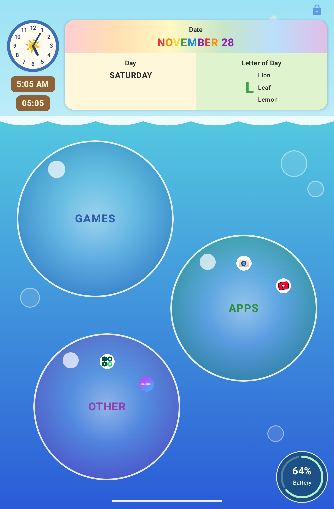

FAMILY // ANDROID LAUNCHER
Kids Launcher
A kid-friendly Android launcher with themed home screens, parent-controlled app bubbles, and optional device-owner kiosk mode. Approved apps can be grouped into Games, Apps, and Other.

Test-only build, not a certified parental-control solution. Optional device-owner provisioning grants device-management control; review setup and back up the device first.